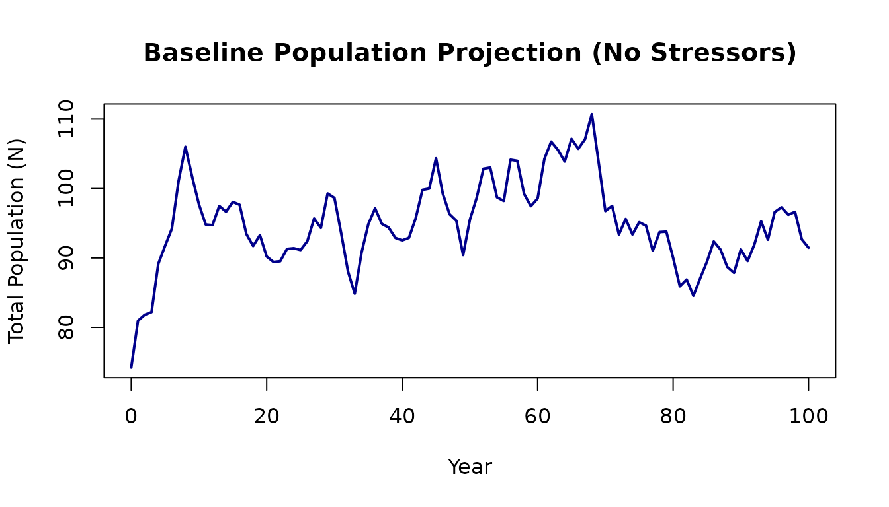
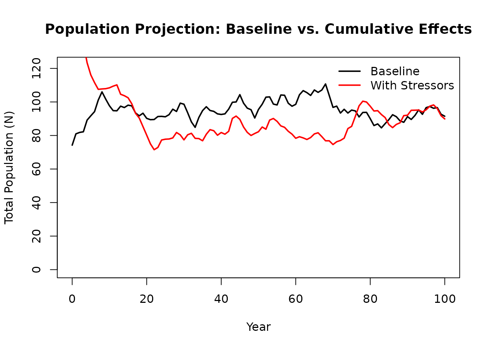
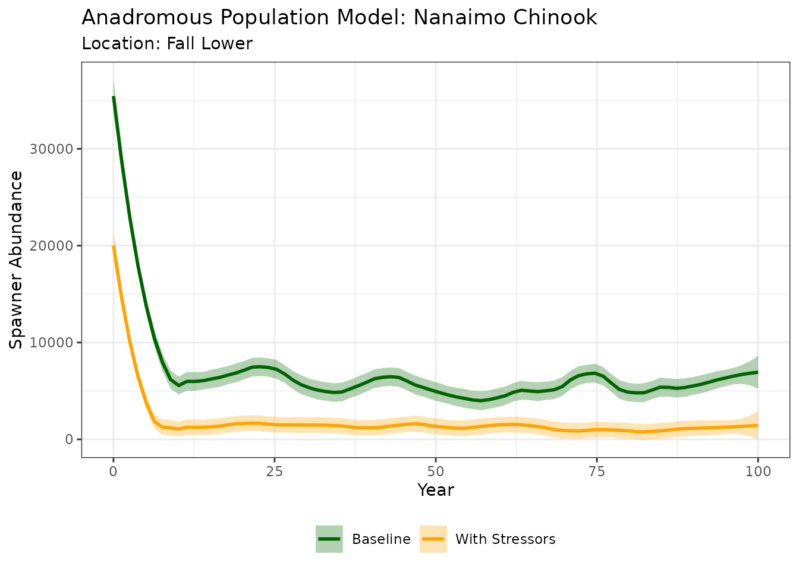
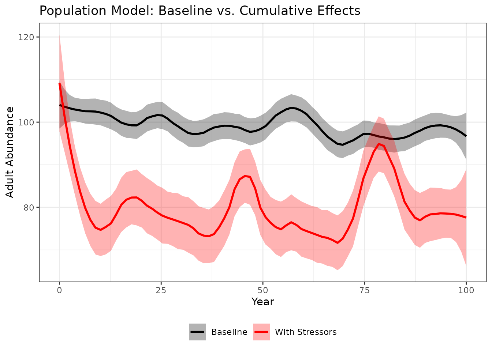

3. Population Model Overview
2026-01-08
Source:vignettes/a03-population-model.Rmd
a03-population-model.RmdOverview
This tutorial covers the Population Model component of the CEMPRA framework. Building on the Joe Model’s system capacity scores, the population model translates cumulative effects into demographic impacts on a target species. By the end of this tutorial, you will understand how to: - Configure life cycle parameters for a target species - Run stage-structured matrix population projections - Incorporate density-dependent constraints on population growth - Link environmental stressors to vital rates (survival, fecundity, capacity) - Compare population trajectories under baseline vs. cumulative effect scenarios
What is the Population Model?
The population model is a stage-structured matrix model that projects a hypothetical population forward through time. Unlike the Joe Model, which produces a single system capacity score, the population model:
- Tracks simulated individuals through multiple life stages (e.g., egg, fry, juvenile, adult)
- Applies density-dependent constraints using Beverton-Holt or Hockey-Stick functions based on habitat availability.
- Links stressors to vital rates (survival, fecundity, or carrying capacity at specific life stages)
- Produces time series projections showing how population abundance changes over years
This allows you to understand which life stages are most limiting and how stressors affect population dynamics.
When to Use the Population Model
| Use Case | Benefit |
|---|---|
| Identify demographic bottlenecks | Understand which life stages limit population growth |
| Compare recovery scenarios | Evaluate which stressor reductions have the largest population benefit |
| Assess cumulative effects | See how multiple stressors combine to affect population trajectories |
| Spatial prioritization | Compare population dynamics across locations |
Prerequisites
Before starting this tutorial, you should:
- Complete Tutorial 1: Joe Model Overview to understand stressor-response relationships
- Have basic familiarity with population ecology concepts (carrying capacity, density dependence)
- Review the CEMPRA Guidance Document Section on the Life Cycle Model for detailed background
Understanding the Input Data
The population model requires several input files:
| Input File | Purpose |
|---|---|
| Life Cycle Profile (CSV) | Species-specific vital rates: survival, fecundity, maturity schedules |
| Stressor-Response Workbook (Excel) | Dose-response curves linking stressors to system capacity |
| Stressor-Magnitude Workbook (Excel) | Location-specific stressor values |
| Habitat Capacities File (Excel or CSV, optional) | Location and stage-specific carrying capacities |
The stressor-response and stressor-magnitude workbooks are the same files used in the Joe Model. The life cycle profile and habitat capacity files are new and specific to population modeling.
Linking Stressors to Vital Rates
A key feature of the population model is the ability to link
environmental stressors directly to life-stage-specific vital
rates. This is configured in the Stressor-Response
Excel Workbook through the Life_stages and
Parameters columns on the Main worksheet.
Stressor-Response Workbook Structure
Recall from Tutorial 1 that the stressor-response workbook contains a Main worksheet that indexes all stressors. For the population model, two additional columns are critical (the Life_stages and the Parameters columns):
| Stressors | Life_stages | Parameters |
|---|---|---|
| Fines | egg | survival |
| Spawn_Gravel | spawners | capacity |
| Spawn_Quality | spawners | capacity |
| Wood_Abund_Fry | stage_0 | survival |
| Wood_Abund_Spawn | spawners | capacity |
| Fry_Capacity | stage_0 | capacity |
By carefully defining these columns we can effecively link stressor-response relationships to specific vital rates. Each stressor-response relationship can be linked to only one vital rate. If multiple linkages are desired then duplicate the stressor & stressor-response relationship accordingly in the Stressor Magnitude and Stressor-Response workbook (e.g., SummerStreamTemp_Parr, SummerStreamTemp_Prespawn).
The Parameters Column
The in the Stressor-Response workbook Parameters column
specifies how the stressor-response relationship
affects the vital rate of interest. There are three possible values:
| Value | Effect | Description |
|---|---|---|
capacity |
Reduces carrying capacity | The stressor reduces the maximum number of individuals that habitat can support at the target life stage (K). This affects density-dependent regulation. |
survival |
Reduces survival probability | The stressor directly reduces the survival rate (S) for the target life stage. This is a density-independent effect. |
fecundity |
Reduces reproductive output | The stressor reduces eggs per spawner (eps). Less commonly used. |
blank or NA
|
Joe Model only | The stressor contributes to system capacity but is not linked to the population model. |
Example interpretation:
- A stressor with
Parameters = "capacity"andLife_stages = "stage_0"reduces the fry carrying capacity. If the system capacity score is 0.70, the fry capacity (K0) is reduced to 70% of baseline. - A stressor with
Parameters = "survival"andLife_stages = "stage_1"reduces stage-1 survival. If the system capacity score is 0.85, the stage-1 survival rate is multiplied by 0.85.
The Life_stages Column
The Life_stages column specifies which life
stage(s) (or specific vital rate) the stressor affects. The
population model recognizes stage-specific tags and several convenient
aliases.
Stage-Specific Tags (Recommended)
For clarity and precision, we recommend using explicit stage numbers:
Survival Tags for Non-Anadromous Populations:
| Life_stages Column | Target Vital Rate |
|---|---|
stage_E, SE
|
Egg survival |
stage_0, S0
|
Age-0 fry/sub-yearling survival |
stage_1, S1, surv_1
|
Stage 1 survival |
stage_2, S2, surv_2
|
Stage 2 survival |
… up to stage_12
|
Higher stages as needed |
Capacity Tags:
| Tag(s) | Target |
|---|---|
SE, stage_E, KE
|
Egg capacity (Ke) |
stage_0, S0, K0
|
Fry capacity (K0) |
stage_1, S1, K1
|
Stage 1 capacity |
stage_2, S2, K2
|
Stage 2 capacity |
… up to stage_12
|
Higher stages as needed |
Anadromous-Specific Tags
For anadromous species, additional tags target pre-breeder (Pb) and spawner (Breeder - B) classes:
Pre-breeder Survival (Pb):
| Tag(s) | Target |
|---|---|
stage_E, SE
|
Egg survival |
stage_0, S0
|
Age-0 fry/sub-yearling survival |
stage_Pb_1 |
Pre-breeder stage 1 survival |
stage_Pb_2 |
Pre-breeder stage 2 survival |
… up to stage_Pb_12
|
Higher stages as needed |
Pre-breeder Capacity (Pb):
| Tag(s) | Target |
|---|---|
stage_Pb_1 |
Pre-breeder stage 1 capacity |
stage_Pb_2 |
Pre-breeder stage 2 capacity |
… up to stage_Pb_12
|
Higher stages as needed |
Spawner Capacity (B):
| Tag(s) | Target |
|---|---|
spawners |
All spawner capacity (pooled across ages) |
spawn_1, spawners_1, B1,
stage_B_1
|
Age-specific spawner capacity |
… up to spawn_12
|
Higher ages as needed |
Pre-spawn and Migration Survival (Anadromous only):
| Tag(s) | Target |
|---|---|
spawners |
All pre-spawn survival (u) |
prespawn_1, u1 … u12
|
Age-specific pre-spawn survival |
smig, spawn_mig
|
All spawner migration survival |
smig_1, spawn_mig_1 …
smig_12
|
Age-specific migration survival |
Fecundity Tags
| Tag | Target |
|---|---|
eps |
Eggs per spawner (all ages) |
eps_3, eps_4, … |
Age-specific fecundity (anadromous) |
Notes on Life Stage Tags
- Tags are case-insensitive (converted to lowercase internally)
-
Underscores and spaces are removed during
processing (e.g.,
stage_1andstage1are equivalent) - You can specify multiple life stages separated by
commas (e.g.,
stage_1, stage_2) - We recommend using explicit stage numbers (
stage_1,stage_2) rather than legacy nicknames for clarity
Part 1: Non-Anadromous Populations
We’ll start with a non-anadromous (resident) species because the life cycle structure is simpler. The example uses parameters representative of Westslope Cutthroat Trout or similar resident trout species. Use the non-anadromous mode for all resident trout or iteroparous species.
1.1 Loading Example Data
Let’s load the example life cycle profile included with CEMPRA:
# Load the life cycle parameters file
filename_lc <- system.file("extdata", "life_cycles.csv", package = "CEMPRA")
life_cycles <- read.csv(filename_lc)
# View the parameters
print(life_cycles)
#> Parameters Name Value
#> 1 Number of life stages Nstage 4.0
#> 2 Adult capacity k 100.0
#> 3 Spawn events per female events 1.0
#> 4 Eggs per female spawn eps 3000.0
#> 5 spawning interval int 1.0
#> 6 egg survival SE 0.1
#> 7 yoy survival S0 0.3
#> 8 sex ratio SR 0.5
#> 9 Hatchling Survival surv_1 0.3
#> 10 Juvenile Survival surv_2 0.3
#> 11 Sub-adult Survival surv_3 0.9
#> 12 Adult Survival surv_4 0.9
#> 13 Years as hatchling year_1 1.0
#> 14 years as juvenile year_2 2.0
#> 15 years as subadult year_3 2.0
#> 16 years as adult year_4 5.0
#> 17 egg survival compensation ratio cr_E 1.0
#> 18 yoy survival compensation ratio cr_0 3.0
#> 19 hatchling survival compensation ratio cr_1 2.5
#> 20 juvenile survival compensation ratio cr_2 2.0
#> 21 subadult survival compensation ratio cr_3 1.1
#> 22 adult survival compensation ratio cr_4 1.0
#> 23 maturity as hatchling mat_1 0.0
#> 24 maturity as juvenile mat_2 0.0
#> 25 maturity as subadult mat_3 0.0
#> 26 maturity as adult mat_4 1.0
#> 27 variance in eggs per female eps_sd 1000.0
#> 28 correlation in egg fecundity through time egg_rho 0.1
#> 29 coefficient of variation in stage-specific mortality M.cv 0.1
#> 30 correlation in mortality through time M.rho 0.11.2 Understanding the Life Cycle Profile
The life cycle profile is a CSV file with three columns:
| Column | Description |
|---|---|
| Parameters | Human-readable description (can be customized nickname) |
| Name | Parameter code used by the model (do not modify) |
| Value | Numeric value for the parameter |
Key Parameter Groups
Population Structure:
| Parameters | Name | Value |
|---|---|---|
| Number of life stages | Nstage | 4 |
| Adult capacity | k | 100 |
-
Nstage: Number of life stages (excluding egg/fry stage 0) -
k: (OPTIONAL) Adult carrying capacity (used with compensation ratios)
Survival Rates:
| Parameters | Name | Value |
|---|---|---|
| egg survival | SE | 0.1 |
| yoy survival | S0 | 0.3 |
| sex ratio | SR | 0.5 |
| Hatchling Survival | surv_1 | 0.3 |
| Juvenile Survival | surv_2 | 0.3 |
| Sub-adult Survival | surv_3 | 0.9 |
| Adult Survival | surv_4 | 0.9 |
-
SE: Egg survival (density-independent) -
S0: Age-0 fry/sub-yearling survival (density-independent) -
surv_1tosurv_N: Stage-specific annual survival rates
Important: These survival values should represent density-independent survival (i.e., maximum survival in the absence of crowding). Density-dependent effects are applied separately.
Years in Each Stage:
| Parameters | Name | Value |
|---|---|---|
| Years as hatchling | year_1 | 1 |
| years as juvenile | year_2 | 2 |
| years as subadult | year_3 | 2 |
| years as adult | year_4 | 5 |
-
year_1toyear_N: Number of years individuals spend in each stage - If all values are 1, this is an age-based (Leslie) matrix model
- Values > 1 allow individuals to remain in a stage for multiple years (stage-based model)
Fecundity:
| Parameters | Name | Value |
|---|---|---|
| Spawn events per female | events | 1e+00 |
| Eggs per female spawn | eps | 3e+03 |
| spawning interval | int | 1e+00 |
| sex ratio | SR | 5e-01 |
-
events: Spawning events per female per year (typically 1) -
eps: Eggs per female spawner -
int: Spawning interval in years (typically 1) -
SR: Sex ratio (proportion female, typically 0.5)
Maturity Schedule:
| Parameters | Name | Value |
|---|---|---|
| maturity as hatchling | mat_1 | 0 |
| maturity as juvenile | mat_2 | 0 |
| maturity as subadult | mat_3 | 0 |
| maturity as adult | mat_4 | 1 |
-
mat_1tomat_N: Proportion of each stage that is sexually mature (0-1) - In this example, only stage 4 adults are mature
(
mat_4 = 1)
Stochasticity Parameters:
| Parameters | Name | Value |
|---|---|---|
| variance in eggs per female | eps_sd | 1e+03 |
| correlation in egg fecundity through time | egg_rho | 1e-01 |
| coefficient of variation in stage-specific mortality | M.cv | 1e-01 |
| correlation in mortality through time | M.rho | 1e-01 |
-
eps_sd: Standard deviation in eggs per female -
egg_rho: Correlation in fecundity between years (0-1) -
M.cv: Coefficient of variation in stage-specific mortality -
M.rho: Correlation in mortality between years (0-1)
Higher correlation values mean good/bad years affect all cohorts simultaneously.
1.3 Setting Up the Matrix Model
The population model uses two setup functions to build the mathematical framework:
# Step 1: Initialize population model parameters
pop_mod_setup <- pop_model_setup(life_cycles = life_cycles)
# Step 2: Build matrix elements
pop_mod_mat <- pop_model_matrix_elements(pop_mod_setup = pop_mod_setup)
#> Running with S0 adjusted to s0.1.det...
# View the components created
names(pop_mod_mat)
#> [1] "projection_matrix" "life_histories" "life_stages_symbolic"
#> [4] "density_stage_symbolic" "anadrmous"The pop_model_matrix_elements() function returns:
-
projection_matrix: The numerical transition matrix (A) -
life_stages_symbolic: Symbolic (equation) form of the matrix -
density_stage_symbolic: Density-dependence modifier matrix -
life_histories: Derived life history parameters
The Transition Matrix
The transition matrix governs how individuals move between life stages:
# View the transition matrix
A <- pop_mod_mat$projection_matrix
print(round(A, 3))
#> [,1] [,2] [,3] [,4]
#> [1,] 0.0 0.000 0.000 45.000
#> [2,] 0.3 0.231 0.000 0.000
#> [3,] 0.0 0.069 0.474 0.000
#> [4,] 0.0 0.000 0.426 0.756Reading the matrix:
- Rows represent the “to” stage; columns represent the “from” stage
- The top row contains fecundity elements (new recruits from mature stages)
- The diagonal elements represent probability of staying in the same stage
- Sub-diagonal elements represent probability of advancing to the next stage
1.4 Eigenanalysis (Density-Independent Growth)
Before running full projections, we can use eigenanalysis to understand basic population dynamics under density-independent conditions:
# Calculate lambda (intrinsic growth rate)
lambda_val <- popbio::lambda(A)
cat("Lambda (intrinsic growth rate):", round(lambda_val, 3), "\n")
#> Lambda (intrinsic growth rate): 1.211
# Lambda > 1 means population grows exponentially
# Lambda < 1 means population declines
# Lambda = 1 means stable population
# Calculate elasticities (proportional sensitivity)
eigen_results <- popbio::eigen.analysis(A)
print("Elasticities:")
#> [1] "Elasticities:"
print(round(eigen_results$elasticities, 3))
#> [,1] [,2] [,3] [,4]
#> [1,] 0.000 0.000 0.000 0.153
#> [2,] 0.153 0.036 0.000 0.000
#> [3,] 0.000 0.153 0.098 0.000
#> [4,] 0.000 0.000 0.153 0.254Interpreting elasticities: Elasticities show which matrix elements have the greatest proportional influence on lambda. Higher values indicate life stages where changes have the largest impact on population growth.
1.5 Running Density-Dependent Projections
Real populations don’t grow exponentially forever - they experience
density-dependent constraints. The
Projection_DD() function projects the population forward
while applying these constraints.
Basic Projection (No Stressors)
# Extract the components needed for projection
life_histories <- pop_mod_mat$life_histories
life_stages_symbolic <- pop_mod_mat$life_stages_symbolic
density_stage_symbolic <- pop_mod_mat$density_stage_symbolic
# Run population projection for 100 years
baseline <- Projection_DD(
M.mx = life_stages_symbolic, # Transition matrix (symbolic)
D.mx = density_stage_symbolic, # Density-dependence matrix
H.mx = NULL, # Harvest matrix (not used)
dat = life_histories, # Life history parameters
K = life_histories$Ka, # Adult carrying capacity
Nyears = 100, # Years to simulate
p.cat = 0, # Probability of catastrophe
CE_df = NULL # No cumulative effect stressors
)
# View the output components
names(baseline)
#> [1] "pop" "N" "lambdas" "vars" "Cat."
# Plot population trajectory
plot(baseline$pop$year, baseline$pop$N,
type = 'l', lwd = 2, col = "darkblue",
xlab = "Year", ylab = "Total Population (N)",
main = "Baseline Population Projection (No Stressors)")
The population fluctuates around the carrying capacity due to stochastic variation in survival and fecundity.
Understanding Density Dependence
The model uses Beverton-Holt density dependence by default. This creates a compensatory relationship where survival decreases as population density approaches carrying capacity:
Where: - = density-independent survival rate - = current population size - = carrying capacity
The model also supports Hockey-Stick density dependence, which imposes a hard cap at carrying capacity.
1.6 Adding Cumulative Effect Stressors
Now let’s add environmental stressors that affect population vital rates. Stressors can target:
- survival: Reduces survival probability for specific life stages
- capacity: Reduces carrying capacity for specific life stages
Creating a Simple Stressor Dataset
# Create stressor data for a hypothetical location
# Stressor 1: Reduces fry carrying capacity by 58%
CE_df1 <- data.frame(
HUC = 123,
Stressor = "Temperature",
dose = 20, # Stressor magnitude (e.g., 20 deg C)
sys.cap = 0.42, # 42% of baseline capacity remains
life_stage = "stage_0",
parameter = "capacity",
Stressor_cat = "Temperature"
)
# Stressor 2: Reduces stage-1 survival by 20%
CE_df2 <- data.frame(
HUC = 123,
Stressor = "Sediment",
dose = 30, # Stressor magnitude (e.g., 30% fines)
sys.cap = 0.80, # 80% of baseline survival remains
life_stage = "stage_1",
parameter = "survival",
Stressor_cat = "Sediment"
)
# Combine stressors
CE_df <- rbind(CE_df1, CE_df2)
print(CE_df)
#> HUC Stressor dose sys.cap life_stage parameter Stressor_cat
#> 1 123 Temperature 20 0.42 stage_0 capacity Temperature
#> 2 123 Sediment 30 0.80 stage_1 survival Sediment1.7 Comparing Baseline vs. CE Scenarios
Now let’s run the projection with stressors and compare to baseline:
# Run projection WITH cumulative effect stressors
ce_projection <- Projection_DD(
M.mx = life_stages_symbolic,
D.mx = density_stage_symbolic,
H.mx = NULL,
dat = life_histories,
K = life_histories$Ka,
Nyears = 100,
p.cat = 0,
CE_df = CE_df
)
# Plot comparison
plot(baseline$pop$year, baseline$pop$N,
type = 'l', lwd = 2, col = "black",
xlab = "Year", ylab = "Total Population (N)",
main = "Population Projection: Baseline vs. Cumulative Effects",
ylim = c(0, max(baseline$pop$N) * 1.1))
lines(ce_projection$pop$year, ce_projection$pop$N,
lwd = 2, col = "red")
legend("topright",
legend = c("Baseline", "With Stressors"),
col = c("black", "red"), lwd = 2, bty = "n")
# Calculate relative impact
baseline_median <- median(baseline$pop$N[50:100])
ce_median <- median(ce_projection$pop$N[50:100])
relative_capacity <- ce_median / baseline_median
cat("\nBaseline median abundance:", round(baseline_median, 0))
#>
#> Baseline median abundance: 96
cat("\nWith stressors median abundance:", round(ce_median, 0))
#>
#> With stressors median abundance: 87
cat("\nRelative system capacity:", round(relative_capacity * 100, 1), "%\n")
#>
#> Relative system capacity: 90.5 %The red line shows population suppression when environmental stressors are applied.
1.8 Using Location-Specific Habitat Capacities
For more realistic modeling, you can specify location and stage-specific carrying capacities instead of (or in addition to) using compensation ratios.
Habitat Capacity File Format
# View the example habitat capacity file structure
filename_dd <- system.file("extdata", "habitat_dd_k.xlsx", package = "CEMPRA")
habitat_dd_k <- readxl::read_excel(filename_dd)
print(as.data.frame(habitat_dd_k[1:3, ]))
#> HUC_ID NAME k_stage_0_mean k_stage_1_mean k_stage_2_mean k_stage_3_mean
#> 1 1 NA 10000 1e+07 1e+07 1e+05
#> 2 2 NA NA NA NA NA
#> 3 3 NA NA NA NA NA
#> k_stage_4_mean k_stage_0_cv k_stage_1_cv k_stage_2_cv k_stage_3_cv
#> 1 1000 0.1 0.1 0.1 0.1
#> 2 NA NA NA NA NA
#> 3 NA NA NA NA NA
#> k_stage_4_cv notes
#> 1 0.1 NA
#> 2 NA NA
#> 3 NA NAThe habitat capacity file has columns:
| Column | Description |
|---|---|
HUC_ID |
Location identifier (must match stressor data) |
NAME |
Location name |
k_stage_0_mean |
Carrying capacity for fry (stage 0) |
k_stage_1_mean |
Carrying capacity for stage 1 |
k_stage_2_mean, etc. |
Carrying capacity for subsequent stages |
k_stage_X_cv |
(Optional) Coefficient of variation for interannual variability |
Important: Only include columns for stages with density-dependent bottlenecks. Leave cells blank or omit columns for stages without capacity constraints.
Enabling Stage-Specific Density Dependence
To use stage-specific capacities, you must add density-dependence flags to your life cycle profile:
# Add these rows to your life_cycles.csv to enable density dependence:
# Name Value
# bh_stage_0 TRUE # Beverton-Holt for egg-to-fry transition
# bh_stage_1 TRUE # Beverton-Holt for fry-to-parr transition
# hs_stage_2 TRUE # Hockey-Stick for stage 2 (hard cap)| Flag | Function | Description |
|---|---|---|
bh_stage_0 |
Beverton-Holt | Egg-to-fry transition |
hs_stage_0 |
Hockey-Stick | Egg-to-fry (hard cap) |
bh_stage_1, bh_stage_2, … |
Beverton-Holt | Stage transitions |
hs_stage_1, hs_stage_2, … |
Hockey-Stick | Stage transitions (hard cap) |
Part 2: Anadromous Populations
Anadromous species (salmon) require a different model structure because:
- Individuals spawn only once and then die (semelparity)
- Fish may return to spawn at different ages (age-3, age-4, age-5)
- The model must track pre-breeders (fish still at sea) separately from breeders (returning spawners)
2.1 Key Differences from Non-Anadromous Models
| Feature | Non-Anadromous | Anadromous |
|---|---|---|
| Spawning | Multiple times (iteroparous) | Once then die (semelparous) |
| Maturity | Single stage matures | Multiple age classes can mature |
| Structure | Stages can span multiple years | Each year is typically one stage |
| Parameters | Single eps
|
Age-specific eps_3, eps_4,
eps_5
|
| Additional rates | None | Migration survival (smig_X), pre-spawn survival
(u_X) |
2.2 Loading Anadromous Example Data (Nanaimo Chinook)
For this example, we’ll use a complete dataset for Chinook Salmon from the Nanaimo River system. This includes the life cycle profile, stressor data, and habitat capacities:
# Load anadromous life cycle profile
filename_lc_anad <- system.file("extdata", "nanaimo/species_profiles/nanaimo_comp_ocean_summer.csv", package = "CEMPRA")
life_cycles_anad <- read.csv(filename_lc_anad)
# Load stressor-response workbook
filename_sr_anad <- system.file("extdata", "nanaimo/stressor_response_nanaimo.xlsx", package = "CEMPRA")
sr_wb_anad <- StressorResponseWorkbook(filename = filename_sr_anad)
# Load stressor-magnitude workbook
filename_sm_anad <- system.file("extdata", "nanaimo/stressor_magnitude_nanaimo.xlsx", package = "CEMPRA")
dose_anad <- StressorMagnitudeWorkbook(filename = filename_sm_anad)
# Load habitat capacities file
filename_hab_anad <- system.file("extdata", "nanaimo/habitat_capacities_nanaimo.csv", package = "CEMPRA")
habitat_dd_k_anad <- read.csv(filename_hab_anad)
# View available locations
print(unique(dose_anad$HUC_ID))
#> [1] 1 2 32.3 Understanding the Anadromous Life Cycle Profile
# View key parameters
print(life_cycles_anad)
#> Parameters Name Value
#> 1 Number of life stages Nstage 5
#> 2 Anadromous anadromous TRUE
#> 3 Adult capacity k 5000
#> 4 Spawn events per female events 1
#> 5 Eggs per age-3 female spawner eps_3 1953
#> 6 Eggs per age-4 female spawner eps_4 4000
#> 7 Eggs per age-5 female spawner eps_5 5200
#> 8 Spawning interval int 1
#> 9 Egg survival SE 0.4
#> 10 Fry survival S0 0.4
#> 11 Sex ratio male to female SR 0.5
#> 12 Stage 1 to Stage 2 surv_1 0.0498
#> 13 Stage 2 to Stage 3 surv_2 0.7
#> 14 Stage 3 to Stage 4 surv_3 0.8
#> 15 Stage 4 to Stage 5 surv_4 0.9
#> 16 Stage 5 to Stage 6 surv_5 0
#> 17 Pre-spawn mortality of Age-3 spawners u_3 1
#> 18 Pre-spawn mortality of Age-4 spawners u_4 1
#> 19 Pre-spawn mortality of Age-5 spawners u_5 1
#> 20 Pre-spawn mortality of Age-6 spawners u_6 1
#> 21 Migration survival of Age-3 spawners smig_3 0.9
#> 22 Migration survival of Age-4 spawners smig_4 0.9
#> 23 Migration survival of Age-5 spawners smig_5 0.9
#> 24 compensation ratios - not used cr_E 1
#> 25 compensation ratios - not used cr_0 1
#> 26 compensation ratios - not used cr_1 1
#> 27 compensation ratios - not used cr_2 1
#> 28 compensation ratios - not used cr_3 1
#> 29 compensation ratios - not used cr_4 1
#> 30 compensation ratios - not used cr_5 1
#> 31 probability of maturity at age-3 mat_3 0.2
#> 32 probability of maturity at age-4 mat_4 0.6
#> 33 probability of maturity at age-5 mat_5 1
#> 34 variance in eggs per female eps_sd 500
#> 35 correlation in egg fecundity through time egg_rho 0.1
#> 36 coefficient of variation in stage-specific mortality M.cv 0.2
#> 37 correlation in mortality through time M.rho 0.1
#> 38 DD constraint on fry colonization in river bh_stage_0 TRUE
#> 39 DD constraint on fry rearing in estuary bh_stage_pb_1 TRUE
#> 40 Density-dependent constraint on fry colonization bh_spawners TRUE
#> Notes
#> 1 Max possible spawner age is 6
#> 2
#> 3 Not used
#> 4
#> 5 Avg. from Walters and Korman 2024
#> 6 Fix at 4000 from RAMS 2021
#> 7 Avg. from Walters and Korman 2024
#> 8 Spanwing events occur every year.
#> 9 Avg. upper lim from RAMs & Walters and Korman (2024)
#> 10 Avg. upper lim from RAMs & Walters and Korman (2024)
#> 11 Equal portions male/female
#> 12 from Walters and Korman et al., 2024: Review
#> 13 From Beechie et al., 2021 & W&K 2024
#> 14 From Beechie et al., 2021 & W&K 2024
#> 15 From Beechie et al., 2021 & W&K 2024
#> 16 Terminal stage
#> 17
#> 18
#> 19
#> 20
#> 21
#> 22
#> 23
#> 24
#> 25
#> 26
#> 27
#> 28
#> 29
#> 30
#> 31 Assume 20% from Walters and Korman avg. of East Coast VI Chin Pops.
#> 32 Assume 20% from Walters and Korman avg. of East Coast VI Chin Pops.
#> 33 Assume 100% remaining spawn at age-5
#> 34
#> 35
#> 36 Previouslly 0.02
#> 37
#> 38 Beverton-Holt
#> 39 Beverton-Holt (but set to inf)
#> 40 Beverton-HoltThe Anadromous Flag
The most important parameter is the anadromous flag:
| Parameters | Name | Value |
|---|---|---|
| Anadromous | anadromous | TRUE |
Setting anadromous = TRUE tells the model to use the
anadromous matrix structure.
Age-Specific Fecundity
Unlike non-anadromous models with a single eps value,
anadromous models specify fecundity by age:
| Parameters | Name | Value |
|---|---|---|
| Eggs per age-3 female spawner | eps_3 | 1953 |
| Eggs per age-4 female spawner | eps_4 | 4000 |
| Eggs per age-5 female spawner | eps_5 | 5200 |
Older fish typically produce more eggs, so age-specific fecundity captures this biological reality.
Age-Specific Maturity Schedule
The maturity schedule determines what proportion of fish return to spawn at each age:
| Parameters | Name | Value |
|---|---|---|
| probability of maturity at age-3 | mat_3 | 0.2 |
| probability of maturity at age-4 | mat_4 | 0.6 |
| probability of maturity at age-5 | mat_5 | 1 |
In this example: - 20% of surviving fish spawn at age 3 - 60% of surviving fish spawn at age 4 - 100% of remaining fish spawn at age 5 (maximum age)
Migration and Pre-Spawn Survival
Anadromous models include additional survival parameters:
| Parameters | Name | Value |
|---|---|---|
| Pre-spawn mortality of Age-3 spawners | u_3 | 1 |
| Pre-spawn mortality of Age-4 spawners | u_4 | 1 |
| Pre-spawn mortality of Age-5 spawners | u_5 | 1 |
| Pre-spawn mortality of Age-6 spawners | u_6 | 1 |
| Migration survival of Age-3 spawners | smig_3 | 0.9 |
| Migration survival of Age-4 spawners | smig_4 | 0.9 |
| Migration survival of Age-5 spawners | smig_5 | 0.9 |
-
smig_X: Migration survival for age-X spawners returning from ocean -
u_X: Pre-spawn survival for age-X spawners (survival from arrival to spawning)
Density-Dependence Flags
Note the density-dependence flags at the bottom of the life cycle profile:
| Parameters | Name | Value |
|---|---|---|
| DD constraint on fry colonization in river | bh_stage_0 | TRUE |
| DD constraint on fry rearing in estuary | bh_stage_pb_1 | TRUE |
| Density-dependent constraint on fry colonization | bh_spawners | TRUE |
These flags tell the model which life stages have density-dependent constraints.
2.4 Habitat Capacities for Anadromous Populations
Let’s examine the habitat capacities file:
print(habitat_dd_k_anad)
#> HUC_ID NAME k_stage_0_mean k_stage_Pb_1_mean k_stage_B_mean
#> 1 1 Fall Lower 627594 NA 38073
#> 2 2 Summer - Lower 1247555 NA 15384
#> 3 3 Summer - Upper 913589 NA 20943The habitat capacity file for anadromous species uses column names that distinguish between pre-breeders (Pb) and breeders (B):
| Column | Description |
|---|---|
HUC_ID |
Location identifier |
NAME |
Location name |
k_stage_0_mean |
Fry capacity |
k_stage_Pb_1_mean |
Pre-breeder stage 1 capacity (e.g., parr) |
k_stage_B_mean or k_spawner_mean
|
Total spawner capacity (all ages) |
In this example, we have fry capacity (k_stage_0_mean)
and spawner capacity (k_stage_B_mean) specified for each
location.
2.5 Running the Anadromous Population Model
Now let’s run the full population model for an anadromous species with habitat capacities:
# Select a target location
target_HUC_anad <- 1 # "Fall Lower" population
# Run the population model
results_anad <- PopulationModel_Run(
dose = dose_anad,
sr_wb_dat = sr_wb_anad,
life_cycle_params = life_cycles_anad,
HUC_ID = target_HUC_anad,
n_years = 100,
MC_sims = 5,
output_type = "adults",
habitat_dd_k = habitat_dd_k_anad
)
# View output structure
head(results_anad)
#> year N MC_sim group
#> 1 0 38073.000 1 ce
#> 2 1 2247.734 1 ce
#> 3 2 6589.878 1 ce
#> 4 3 4434.686 1 ce
#> 5 4 7671.632 1 ce
#> 6 5 1014.496 1 ce
# Calculate summary statistics
baseline_spawners <- median(results_anad$N[results_anad$group == "baseline"], na.rm = TRUE)
ce_spawners <- median(results_anad$N[results_anad$group == "ce"], na.rm = TRUE)
cat("\nBaseline median spawners:", round(baseline_spawners, 0))
#>
#> Baseline median spawners: 5274
cat("\nWith stressors median spawners:", round(ce_spawners, 0))
#>
#> With stressors median spawners: 1177
cat("\nRelative capacity:", round(ce_spawners / baseline_spawners * 100, 1), "%\n")
#>
#> Relative capacity: 22.3 %Visualizing Anadromous Population Projections
# Plot the results
ggplot(results_anad, aes(x = year, y = N, color = group)) +
stat_smooth(method = "loess", span = 0.2, se = TRUE,
aes(fill = group), alpha = 0.3) +
scale_color_manual(values = c("baseline" = "darkgreen", "ce" = "orange"),
labels = c("baseline" = "Baseline", "ce" = "With Stressors")) +
scale_fill_manual(values = c("baseline" = "darkgreen", "ce" = "orange"),
labels = c("baseline" = "Baseline", "ce" = "With Stressors")) +
labs(x = "Year", y = "Spawner Abundance",
title = "Anadromous Population Model: Nanaimo Chinook",
subtitle = paste("Location:", habitat_dd_k_anad$NAME[target_HUC_anad])) +
theme_bw() +
theme(legend.position = "bottom",
legend.title = element_blank())
#> `geom_smooth()` using formula = 'y ~ x'
2.6 Comparing Multiple Anadromous Locations
We can run the model for multiple locations and compare outcomes:
# Run for all locations
all_results <- list()
for (huc in unique(dose_anad$HUC_ID)) {
result <- PopulationModel_Run(
dose = dose_anad,
sr_wb_dat = sr_wb_anad,
life_cycle_params = life_cycles_anad,
HUC_ID = huc,
n_years = 100,
MC_sims = 3,
output_type = "adults",
habitat_dd_k = habitat_dd_k_anad
)
result$location <- habitat_dd_k_anad$NAME[habitat_dd_k_anad$HUC_ID == huc]
all_results[[as.character(huc)]] <- result
}
# Combine results
combined_results <- do.call(rbind, all_results)
# Calculate relative capacity by location
location_summary <- aggregate(
N ~ location + group,
data = combined_results[combined_results$year > 50, ],
FUN = median, na.rm = TRUE
)
# Reshape for comparison
library(reshape2)
location_wide <- dcast(location_summary, location ~ group, value.var = "N")
location_wide$relative_capacity <- location_wide$ce / location_wide$baseline * 100
print(location_wide)
#> location baseline ce relative_capacity
#> 1 Fall Lower 5119.474 1054.9640 20.606885
#> 2 Summer - Lower 8403.093 833.3773 9.917507
#> 3 Summer - Upper 7746.833 383.4239 4.949428Running the Full Population Model (Non-Anadromous)
The PopulationModel_Run() function provides a convenient
wrapper that:
- Runs the Joe Model to calculate stressor effects
- Links stressor effects to vital rates by life stage
- Runs population projections with and without stressors
- Returns comparative results
# Load all required data
filename_sr <- system.file("extdata", "stressor_response_fixed_ARTR.xlsx", package = "CEMPRA")
filename_rm <- system.file("extdata", "stressor_magnitude_unc_ARTR.xlsx", package = "CEMPRA")
filename_lc <- system.file("extdata", "life_cycles.csv", package = "CEMPRA")
sr_wb_dat <- StressorResponseWorkbook(filename = filename_sr)
dose <- StressorMagnitudeWorkbook(filename = filename_rm, scenario_worksheet = "natural_unc")
life_cycle_params <- read.csv(filename_lc)
# Choose a location
target_HUC <- dose$HUC_ID[1]
# Run the population model
results <- PopulationModel_Run(
dose = dose,
sr_wb_dat = sr_wb_dat,
life_cycle_params = life_cycle_params,
HUC_ID = target_HUC,
n_years = 100,
MC_sims = 5,
output_type = "adults"
)
#> At least one NA in stressor values array
#> Running with S0 adjusted to s0.1.det...
# View output structure
head(results)
#> year N MC_sim group
#> 1 0 105.7741 1 ce
#> 2 1 109.4446 1 ce
#> 3 2 107.4242 1 ce
#> 4 3 109.3471 1 ce
#> 5 4 106.8963 1 ce
#> 6 5 104.1837 1 ce
# Plot results
ggplot(results, aes(x = year, y = N, color = group)) +
stat_smooth(method = "loess", span = 0.2, se = TRUE,
aes(fill = group), alpha = 0.3) +
scale_color_manual(values = c("baseline" = "black", "ce" = "red"),
labels = c("baseline" = "Baseline", "ce" = "With Stressors")) +
scale_fill_manual(values = c("baseline" = "black", "ce" = "red"),
labels = c("baseline" = "Baseline", "ce" = "With Stressors")) +
labs(x = "Year", y = "Adult Abundance",
title = "Population Model: Baseline vs. Cumulative Effects") +
theme_bw() +
theme(legend.position = "bottom",
legend.title = element_blank())
#> `geom_smooth()` using formula = 'y ~ x'
Advanced Topics
Stochasticity Parameters
Control population variability through these parameters:
| Parameter | Effect | Typical Values |
|---|---|---|
eps_sd |
SD in eggs per female | 500-1000 |
egg_rho |
Correlation in fecundity between years | 0.1-0.5 |
M.cv |
CV in stage-specific mortality | 0.1-0.2 |
M.rho |
Correlation in mortality between years | 0.1-0.5 |
Higher correlation values (egg_rho, M.rho)
create more synchronized good/bad years across cohorts, increasing
population volatility.
Compensation Ratios
Compensation ratios are an alternative way to parameterize density dependence. They modify survival based on how far the population is from carrying capacity:
Where CR is the compensation ratio. Higher CR values
create stronger density dependence.
Note: We recommend using stage-specific habitat capacities instead of compensation ratios for most applications, as they are more intuitive and directly linked to habitat data.
Next Steps
| Tutorial | Description |
|---|---|
| 4. Population Model Batch Run | Run population projections across multiple scenarios and locations |
| 5. BC CEF Data Import | Import data from BC Cumulative Effects Framework |
| 6. Population Model Sensitivity | Sensitivity analysis and model evaluation |
For additional guidance on building custom species profiles and detailed parameter descriptions, see the CEMPRA Documentation.
References
- Caswell, H. (1997). Matrix Methods for Population Analysis. In Structured-Population Models in Marine, Terrestrial, and Freshwater Systems (pp. 19-58).
- Van der Lee, A.S. and Koops, M.A. (2020). Recovery Potential Modelling of Westslope Cutthroat Trout. DFO Can. Sci. Advis. Sec. Res. Doc. 2020/046.
- Davison, R.J. & Satterthwaite, W.H. (2016). Life cycle models for Pacific salmon. In Pacific Salmon Life Histories (pp. 167-196).
- Schaub, M. & Kery, M. (2021). Integrated Population Models: Theory and Ecological Applications with R and JAGS. Academic Press.